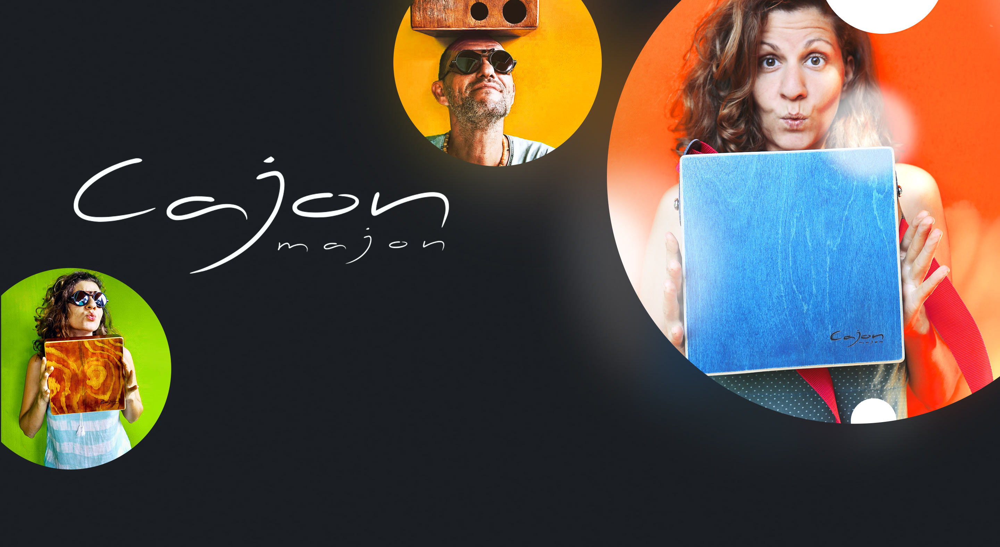
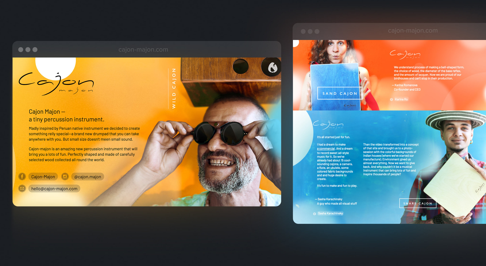
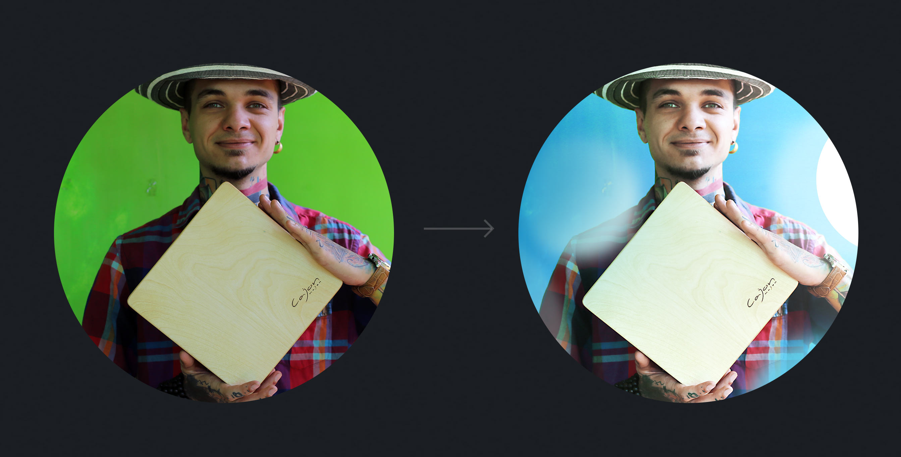

Tasks:
Website, promo pictures, advertising video, music.
Karina and Arthur are my old friends, we have spent several winters together in India. In the fall of 2017 the guys decided to launch the production of cajons — small wooden drums originally from Peru.
When they made their 15th cajon, it became clear that it was way more than a hobby.
Then and there, as a result of our creative collaboration, the brand was born, followed by the video ad (shot on the balcony!), the music and the website.
The website first
We all play different instruments and we know what musicians want. This is the main message. Among other things, we believe that a bright and lively site is better than a faceless online store. Our photos make the brand friendly and build brand confidence. We are all ordinary people and active social media users (the links provided) and we treat our business as very interesting pastime under the palm trees and the glaring sun of India.
As a result, we got a bright lending:

A mini-showcase with serial models of cajons.
Plus all about the guarantee and free worldwide shipping.

Photoshession
Cajon-Majon began to gain popularity in the fall of 2017, when we gathered in India again. Karina brought a brass stamp with a logo from Moscow to put the logo on cajons. Arthur was bringing different sorts of wood and tools from Stockholm. After a while the Instagram and Facebook of Cajon-Majon flourished and it was time to take brand image photos.
It is worth mentioning that here, in India, all the houses are incredibly bright colored, which came in handy, and so the question with the backgrounds was settled.




Additional logo
We decided to add a recognizable sign to the already existing logo phrase. This logo is the result of collaboration with the designer Karina Romanova.
Cajon has the shape of a birdhouse and a similar hole. Hence the bird. In Spanish, ‘cojones’ means ‘eggs’. Plus the lightning - crack that symbolizes the loud sound of our cajons.
Video
Without a studio at hand it was especially crucial to get a vivid picture. We bought fabric backgrounds, invited friends (and even neighbors), waited for the right sun and filmed the promo in a few hours.
Of course, it was a rare pleasure to compose music for the advertising: one can hear the cajons made by the guys, Karina’s ukulele and an Indian flute.
In the nick of time
We decided to make a new banner for the main page to add coziness.